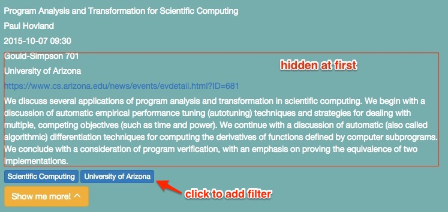
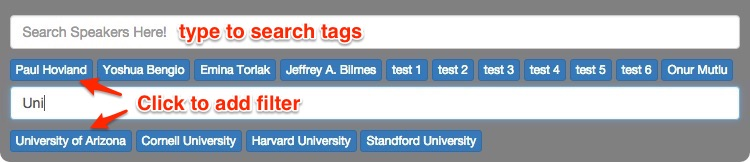
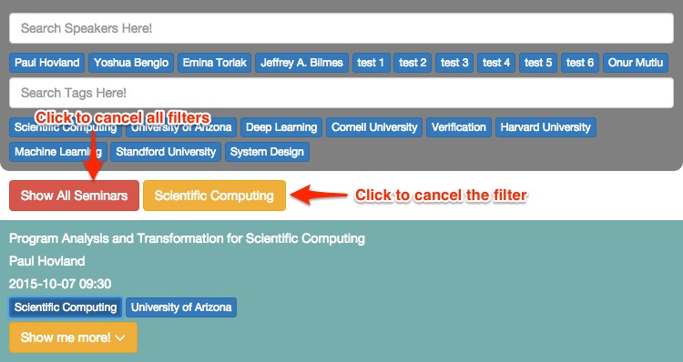

The data is read from alltalks.json. Each seminar is displayed as a list item. At first, some brief information (title, speaker, time, tags) will be shown. You can click Show me more! to check more information (venue, URL, description/abstract).

When the mouse hovers on a list item, a Report a Problem button will show up. You can use this button to report wrong or inappropriate content. The button will redirect the you to the send an email.
Several tags that associate with this seminar will be displayed in the list item. You can click on the tags to see all seminars that has the same tags.
You are able to filter/search the seminars by different tags using the top search bar. At first, a part of the tags will displayed, you can click on the tags to apply the filter. If you cannot find the desired tags, you can type in the text area to search the tags. The search system will filter the tags in real time as you are typing. For example, when you typed "Uni", all the tags with the substring "uni" will show up.

Once you fond the tag, you can click the tags to add the filters. Current applied filters will be shown below the search bar, you can click it to cancel that filter. You can also click the Show All Seminars to clear all applied filters. You can applied multiple filters. For example, you can search all machine learning seminars in Cornell University by clicking machine learning and Cornell University.
